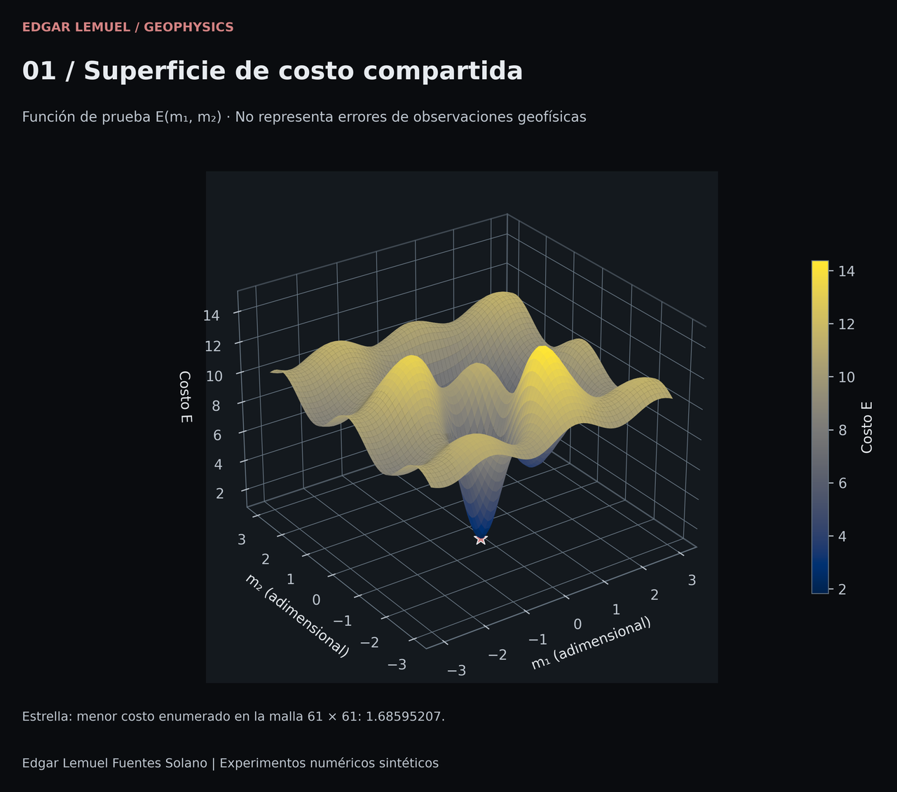
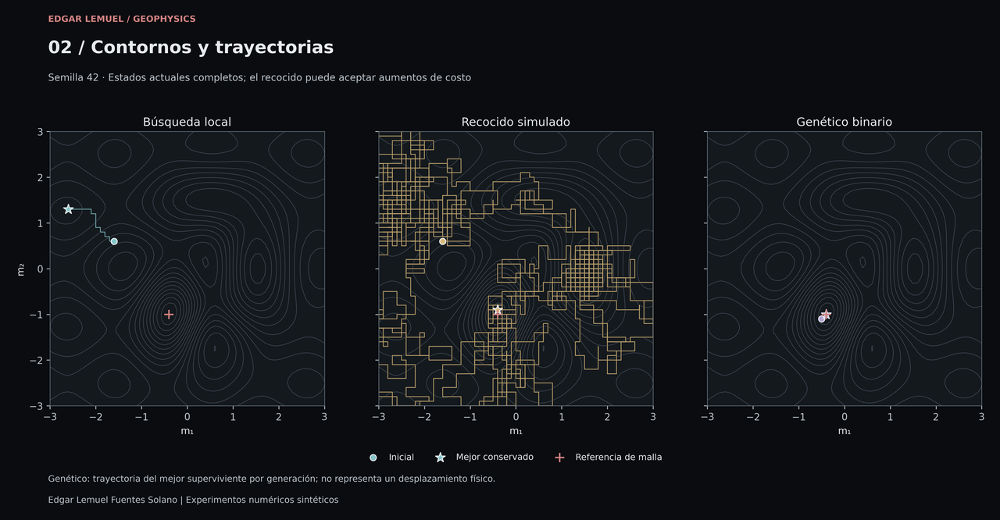
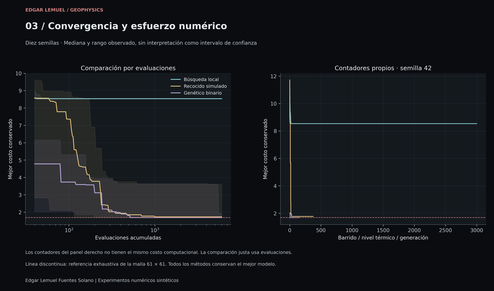
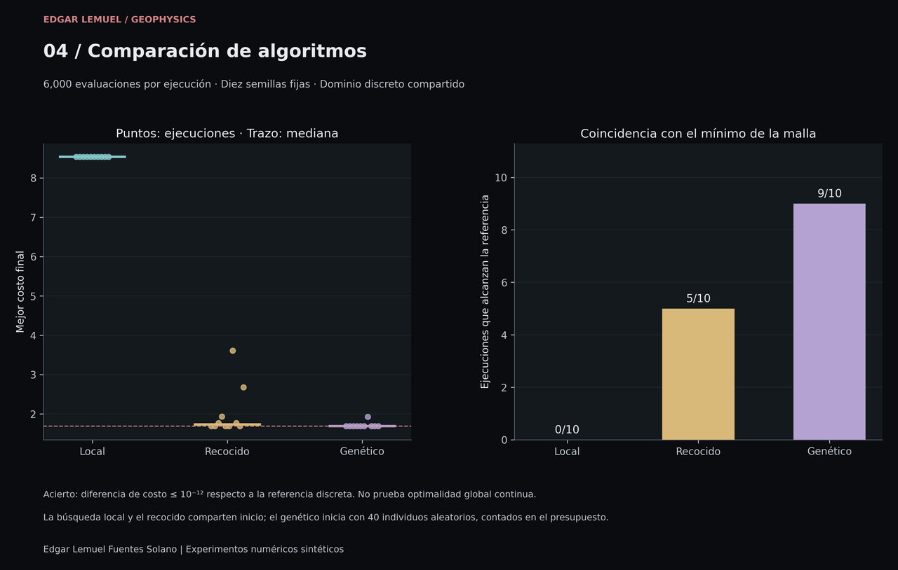
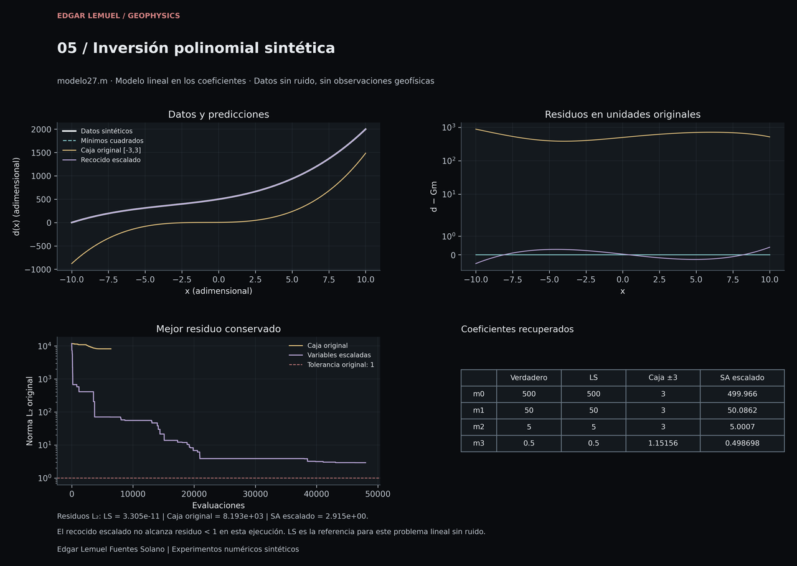

Geofísica computacional / Caso de estudio 03
Métodos inversos y optimización numérica
Implementación y comparación en Python de búsqueda local, recocido simulado y algoritmos genéticos binarios, con análisis de convergencia y superficies de costo.
Experimentos numéricos sintéticos. La comparación usa una función de prueba, y la inversión polinomial usa datos generados matemáticamente. No hay observaciones geofísicas reales. Las ejecuciones corresponden a Python; no se ejecutó MATLAB ni Octave.
01 / Planteamiento matemático
Explorar una superficie con mínimos locales
El proyecto recupera cinco códigos académicos originales en MATLAB y distingue sus operaciones de las versiones corregidas y extendidas en Python. El primer problema consiste en minimizar una superficie de dos parámetros adimensionales; su costo no es una norma de residuos de observaciones geofísicas.
Z1 = 6 (m1/6 - m1³ - m2⁵) exp[-(m1 - 1/2)² - m2²]
Z2 = 2 exp[-(m1 + 1)² - m2²]
B = (1 - m1)² exp[-2 m1² - (m2 + 1)²]
Z4 = 1/2 sin(3 m1) + cos(5 m2/2)
E(m1,m2) = Z1 + Z2 - 6 B + Z4 + 10Esta es la función común de modelo22.m, modelo25.m y geneticos1.m. El archivo recristalizacion_simulada.m cambia el signo del término de B y omite la constante 10. Esa variante se conserva por separado: no se mezclan sus resultados.
Dominio de comparación
Los tres métodos corregidos trabajan en una malla de 61 × 61 nodos en [-3,3]², con paso 0.1. La referencia enumera exhaustivamente sus 3 721 nodos. Las reproducciones de los originales de búsqueda local y recocido son continuas y se documentan como experimentos distintos.
Qué significa un mínimo local
Una regla que acepta únicamente descensos puede quedar atrapada en un valle aunque exista otro nodo con menor costo. En la figura de trayectorias se conserva ese comportamiento; también se muestra un recocido que no alcanza el mejor nodo en la semilla 42.
Tres estrategias, una función compartida
- Búsqueda local
- Parte de (-1.6, 0.6), alterna coordenadas y propone desplazamientos de un nodo en signo aleatorio. Solo acepta mejoras estrictas y proyecta al dominio si cruza un extremo.
- Recocido simulado
- Comparte el inicio y propone desplazamientos de uno a cinco nodos. La regla de Metropolis permite aceptar aumentos de costo: para ΔE > 0, la probabilidad es exp(-ΔE/T). La temperatura disminuye geométricamente de 10 a 1e-5 y se conserva el mejor modelo visitado.
- Algoritmo genético binario
- Inicia con 40 individuos aleatorios. Usa seis bits por parámetro, torneo de tres, cruce de un punto, mutación 0↔1 con probabilidad 1/12 por bit, reparación de índices y supervivencia elitista de los mejores 40 entre padres e hijos.
Los cinco MATLAB permanecen intactos. La revisión de errores y correcciones explica la mutación que solo borraba unos, mil/mi1, la función vale no suministrada y los ciclos ausentes. No se presenta una evolución genética MATLAB completa donde el original no la contiene.
02 / Comparación reproducible
Diez semillas, presupuesto fijo
Cada método se ejecutó con las semillas 7, 19, 42, 73, 101, 137, 211, 307, 401, 503 y 6 000 evaluaciones de costo por ejecución. Son diez realizaciones por método, treinta en total. La población inicial y los modelos repetidos cuentan en el presupuesto.
| Método | Mediana del mejor costo | Mediana de la brecha | Coincidencias |
|---|---|---|---|
| Búsqueda local | 8.536123582899998 | 6.850171508882658 | 0/10 |
| Recocido simulado | 1.727963261714235 | 0.042011187696894936 | 5/10 |
| Algoritmo genético binario | 1.6859520740173402 | 0.0 | 9/10 |
0/10, 5/10 y 9/10 son coincidencias con el mejor nodo de la malla de referencia bajo el presupuesto fijado. El criterio es una diferencia de costo ≤1e-12. No son pruebas de óptimo global continuo ni probabilidades universales de éxito.
La referencia de 61 × 61 nodos tiene costo 1.6859520740173402 en (-0.4, -1.0). La malla adicional de 301 × 301 nodos obtiene 1.6824200872034822 en (-0.4, -0.98): alcanzar la referencia gruesa no certifica un mínimo entre nodos.
Ver los diez experimentos por método y semilla
Costos redondeados a ocho decimales para presentación. El CSV de las 30 ejecuciones conserva la precisión original, brechas, distancias, evaluaciones e historiales resumidos.
| Semilla | Costo local | Coincide | Costo recocido | Coincide | Costo genético | Coincide |
|---|---|---|---|---|---|---|
| 7 | 8.53612358 | No | 1.68595207 | Sí | 1.68595207 | Sí |
| 19 | 8.53612358 | No | 1.68595207 | Sí | 1.68595207 | Sí |
| 42 | 8.53612358 | No | 1.76997445 | No | 1.68595207 | Sí |
| 73 | 8.53612358 | No | 1.93080010 | No | 1.68595207 | Sí |
| 101 | 8.53612358 | No | 1.68595207 | Sí | 1.68595207 | Sí |
| 137 | 8.53612358 | No | 1.68595207 | Sí | 1.68595207 | Sí |
| 211 | 8.53612358 | No | 3.61122617 | No | 1.92540930 | No |
| 307 | 8.53612358 | No | 1.76997445 | No | 1.68595207 | Sí |
| 401 | 8.53612358 | No | 1.68595207 | Sí | 1.68595207 | Sí |
| 503 | 8.53612358 | No | 2.67650333 | No | 1.68595207 | Sí |
La convergencia incluye los experimentos fallidos
La búsqueda local queda atrapada en otro mínimo en las diez realizaciones. El recocido no coincide con la referencia para las semillas 42, 73, 211, 307 y 503. El genético no la alcanza para la semilla 211. Ninguna de esas ejecuciones se excluye de las tablas o figuras.
La curva comparativa muestra la mediana y el rango mínimo–máximo observado por evaluaciones. Ese rango no es un intervalo de confianza. Los contadores de barrido, nivel térmico y generación tienen distinto esfuerzo; la comparación usa evaluaciones y no su número bruto. La búsqueda local y el recocido tienen un inicio fijo, frente a la población inicial aleatoria del genético.
03 / Problema inverso sintético
Recuperar los coeficientes de un polinomio
El caso de modelo27.m es cúbico en x y lineal en sus coeficientes. Tiene 201 muestras sin ruido entre -10 y 10, con paso 0.1. A diferencia de la superficie de prueba, aquí sí existe un operador directo G y un residuo entre datos sintéticos y predicciones.
G = [1, x, x², x³]
m_true = [500, 50, 5, 0.5]ᵀ
d = G m_true
E(m) = ||d - Gm||₂La caja original [-3,3]⁴ excluye tres coeficientes verdaderos. Solo en x=0 obliga a un error de al menos 497, por lo que una tolerancia de 1 es imposible dentro de esa caja. La reproducción conserva el defecto y se contrasta con mínimos cuadrados y con un recocido en variables escaladas.
| Procedimiento | Residuo L₂ | Evaluaciones |
|---|---|---|
| Mínimos cuadrados | 3.304505021630365e-11 | Solución lineal directa |
| Recocido · caja original | 8193.484347201927 | 6 401 |
| Recocido escalado | 2.9149365393296316 | 48 001 |
El recocido escalado no alcanzó la tolerancia de 1. Su residuo es 2.9149365393296316. No se presenta como solución exacta ni se oculta su convergencia insuficiente.
La referencia de mínimos cuadrados usa np.linalg.lstsq, con rango 4. El recocido escalado normaliza las columnas de G y los datos d, usa q en [-2,2]⁴ y un presupuesto independiente de 48 001 evaluaciones. Sus propuestas y aceptaciones no utilizan los coeficientes verdaderos.
Ver los coeficientes recuperados
| Coeficiente | Verdadero | Mínimos cuadrados | Caja original | Recocido escalado |
|---|---|---|---|---|
| m0 | 500.0 | 500.000000000002 | 3.0 | 499.96616439630634 |
| m1 | 50.0 | 49.99999999999958 | 3.0 | 50.0862215818106 |
| m2 | 5.0 | 4.9999999999999645 | 3.0 | 5.000696946854008 |
| m3 | 0.5 | 0.5000000000000016 | 1.1515577539804058 | 0.49869772112863836 |
04 / Visualización científica
Superficies, trayectorias y resultados
Las cinco vistas WebP proceden de las figuras científicas existentes. Selecciona una imagen para ampliar el PNG original; los enlaces PNG y SVG conservan los archivos científicos sin modificaciones.
Figuras en tema oscuro. El contenido numérico es idéntico en ambos temas.


01 / Superficie de costo compartida
Superficie 3D de la función E y estrella en el menor nodo enumerado en la malla 61 × 61. Los polígonos entre nodos no certifican un mínimo continuo.



02 / Contornos y trayectorias
Semilla 42: se muestran los estados actuales de búsqueda local y recocido, y los mejores supervivientes del genético. Esa realización del recocido no alcanza el mejor nodo.



03 / Convergencia y esfuerzo numérico
Mediana y rango observado para diez semillas frente a evaluaciones; un segundo panel muestra los contadores propios de la semilla 42. Los contadores de los métodos no son equivalentes en esfuerzo.



04 / Comparación de algoritmos
Diez costos finales por método y sus medianas. Las coincidencias con la malla son 0/10, 5/10 y 9/10, sin excluir ejecuciones fallidas.



05 / Inversión polinomial sintética
Datos, predicciones, residuos y coeficientes. Se conserva el ajuste con la caja incompatible y el recocido escalado que termina por encima de la tolerancia 1.

05 / Alcance y reproducibilidad
Resultados abiertos, limitaciones explícitas
- El mínimo enumerado corresponde a una malla finita; no certifica optimalidad global continua.
- Diez semillas y una única superficie no demuestran superioridad general de un algoritmo.
- Igualar evaluaciones no iguala los diseños de inicio ni constituye una comparación de tiempo de ejecución.
- La inversión polinomial no utiliza datos de campo ni modela incertidumbre. Su recocido escalado no alcanza la tolerancia planteada.
- Las reproducciones se ejecutaron en Python 3.12 sobre Windows. No se atribuyen resultados de ejecución a MATLAB u Octave.
La validación científica conservada registra 19 pruebas numéricas y la revisión de las 20 exportaciones. Esta integración web solo lee resultados existentes y crea miniaturas; no vuelve a ejecutar experimentos. El informe de integración documenta sus comprobaciones de rutas, accesibilidad básica e integridad.
Código Python y documentación
Consultar los cinco MATLAB originales, sin modificaciones
Reproducir en carpetas nuevas
Estos comandos se ofrecen como documentación para ejecución local desde la raíz del portafolio. No se ejecutan desde la web. El código protege las salidas existentes y exige una carpeta de reproducción nueva o vacía.
python Proyectos/Metodos_Inversos/python/ejecutar.py --salida Proyectos/Metodos_Inversos/resultados_reproduccion
python Proyectos/Metodos_Inversos/python/visualizar.py --resultados Proyectos/Metodos_Inversos/resultados_reproduccion --salida Proyectos/Metodos_Inversos/Figuras_reproduccion --sin-mostrarEl README describe la configuración completa, las correcciones y las pruebas. No se requieren archivos privados para reproducir los experimentos documentados.
Regresar a proyectos destacados